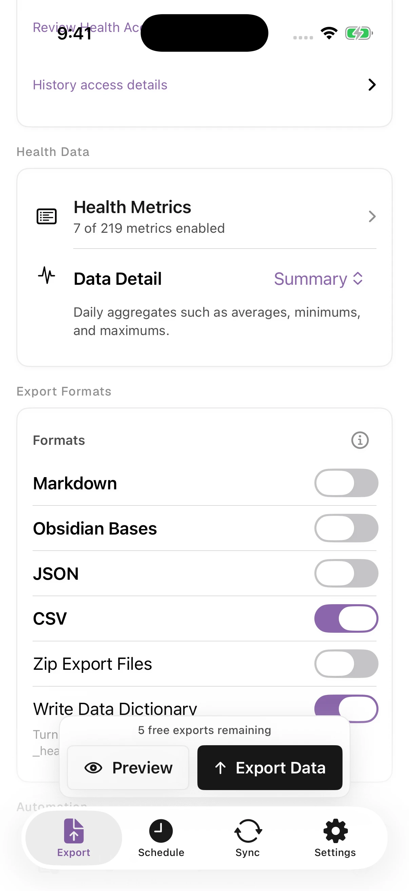
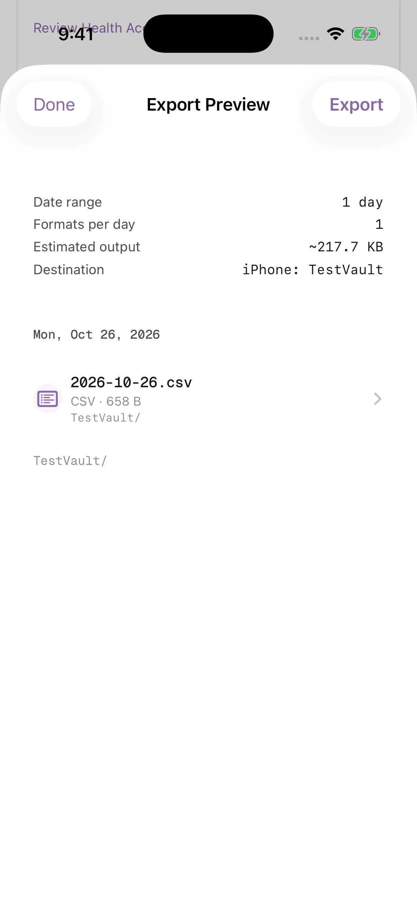
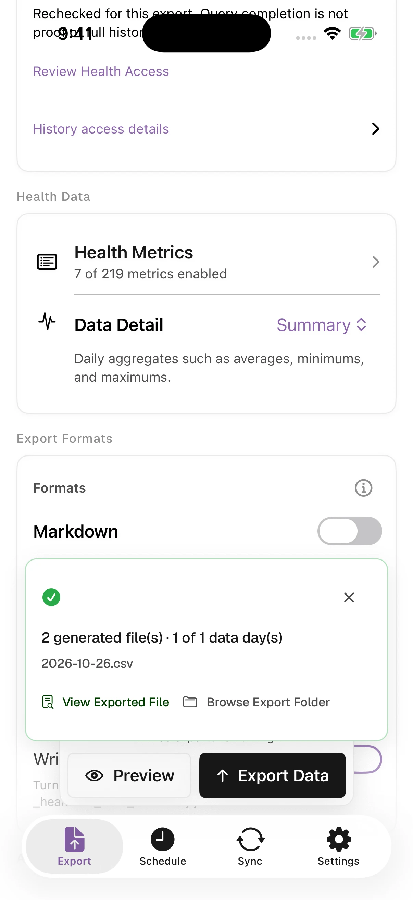
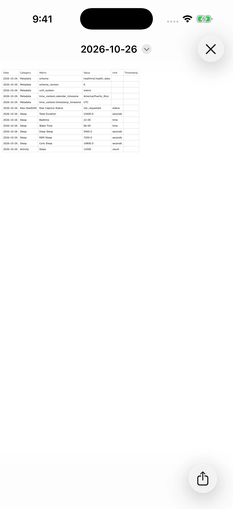
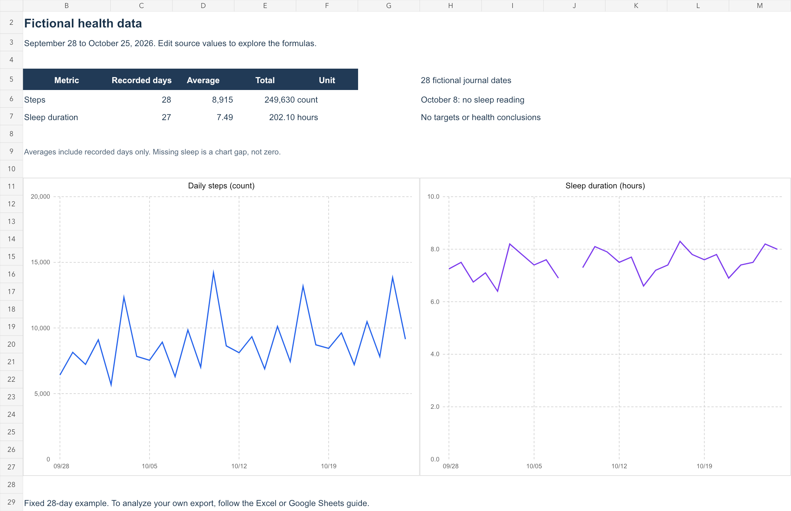
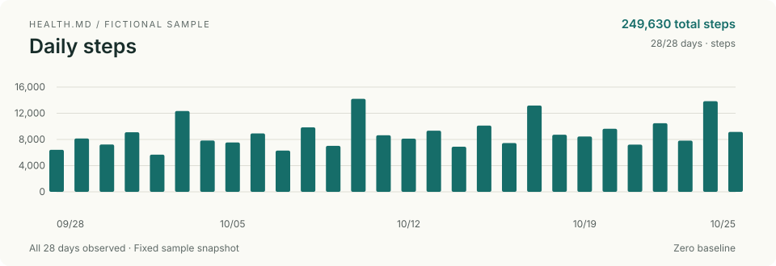

TidBITS
A selected-data export follow-up to Adam Engst's recent Apple Health archive problem. Offer the live workflow and actual fictional output for independent testing.
Open the founder briefHEALTH.MD · OCTOBER 27, 2026 · PREPARED FOR OWNER REVIEW
The content and samples are live. This package makes them easy for an editor to inspect: selected health data as files, a finished spreadsheet, and an Obsidian weekly review.
Start with the TidBITS founder briefNo outreach sent. TidBITS discourages AI pitches; its document is a writing brief for the founder, not a message ready to send.
A selected-data export follow-up to Adam Engst's recent Apple Health archive problem. Offer the live workflow and actual fictional output for independent testing.
Open the founder briefA fictional Obsidian vault with daily notes, a Bases log, fixed charts, and a filled weekly review. Let the editor try the result before setup.
Review the draftThe offline processing example works. A complete iPhone-to-Mac automation claim still needs a verified transfer and independent hands-on testing.
Read the held briefRead the cited publisher research · Open the outreach tracker
The existing app captures use fictional simulator data and the real selected-metric CSV formatter and writer. They show the interface and file result, not physical-device authorization or complete HealthKit coverage.




Inspect the exact CSV: 12,500 steps and 23,400 seconds of sleep. Two generated files in the result means the CSV and optional dictionary, not two data days.
Public destination: first CSV export walkthrough.
The separate 28-day pack contains a working workbook, daily CSV inputs, a combined CSV, and instructions. Its missing sleep date remains missing.

The existing starter vault includes 28 fictional notes, a Bases log, chart snapshots, and a completed review for October 19–25.
That week contains 66,580 steps and 7.63 hours mean recorded sleep. The sample review prose and chart snapshots stay fixed. Interactive charts use a separate optional visualization plugin.

Run this standard-library Python example from the package folder. It creates a weekly review from the included daily CSVs, with no uploads or additional dependencies.
python3 automation/weekly_review.py --input automation/daily --output automation/weekly-review.mdInspect the generated review · Read the script · Read its checks
Verified result: 249,630 steps over 28 recorded days; 7.49 hours average sleep over 27 recorded days.
This demonstrates local file processing. It does not establish a completed iPhone-to-Mac transfer, a Shortcuts action, a folder watcher, or a scheduled export. The MacStories brief retains that distinction.
Track real contacts, independent placements, useful destination links, and qualified referral actions. Keep resource activations separate from installs and purchases.
The available Search Console baseline predates these releases. No new authenticated page/query export was available in this session. Review discovery around November 8–10, then comparable search/action trends around November 22–24.
Read the measurement plan · Inspect the source asset manifest · Read package instructions